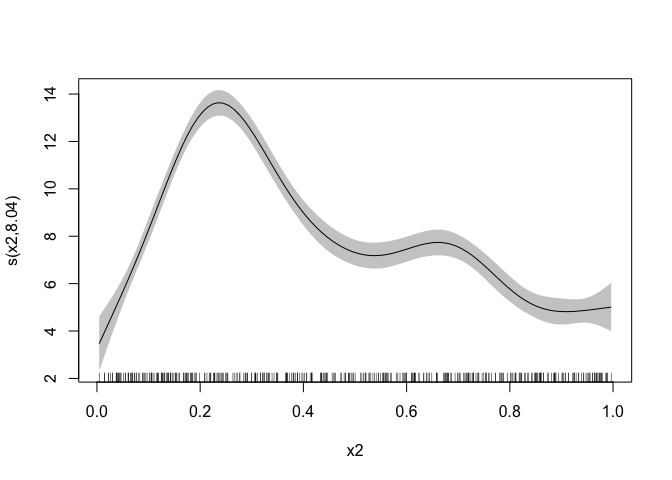
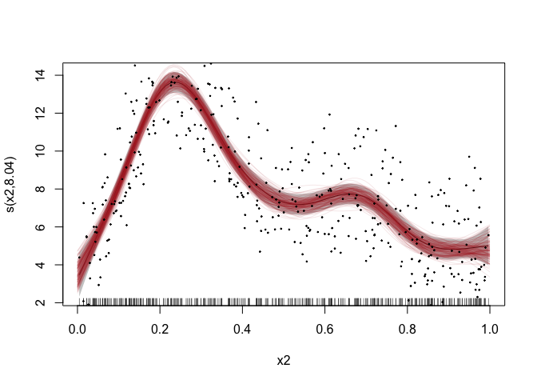

greta.gam lets you use mgcv’s smoother functions and formula syntax to define smooth terms for use in a greta model. You can then define your own likelihood to complete the model, and fit it by MCMC.
The design and architecture of the package was done by Nick Golding, and David L Miller.
Installation
You can install the development version of greta.gam from the R-universe with:
install.packages("greta.gam", repos = c("https://greta-dev.r-universe.dev", "https://cloud.r-project.org"))Or you can install from CRAN with:
install.packages("greta.gam")Example
Here’s a simple example adapted from the mgcv ?gam help file. In mgcv:
library(mgcv)
#> Loading required package: nlme
#> This is mgcv 1.9-1. For overview type 'help("mgcv-package")'.
set.seed(2024 - 12 - 12)
# simulate some data...
dat <- gamSim(1, n = 400, dist = "normal", scale = 0.3)
#> Gu & Wahba 4 term additive model
head(dat)
#> y x0 x1 x2 x3 f f0 f1
#> 1 6.189450 0.1965959 0.4034173 0.7343655 0.7300751 5.759744 1.158200 2.240804
#> 2 11.198472 0.7164260 0.8771072 0.1027748 0.6644855 11.004222 1.555243 5.778906
#> 3 5.100980 0.3620857 0.4601120 0.8524531 0.9341949 4.681517 1.815195 2.509852
#> 4 7.441910 0.3910775 0.5848327 0.7292472 0.5560306 7.557107 1.884044 3.220915
#> 5 7.617724 0.8133072 0.6959593 0.7285362 0.6814503 7.594086 1.106920 4.022560
#> 6 7.668790 0.4279599 0.3961759 0.5802106 0.3974592 7.235281 1.948997 2.208585
#> f2 f3
#> 1 2.3607405 0
#> 2 3.6700722 0
#> 3 0.3564696 0
#> 4 2.4521485 0
#> 5 2.4646055 0
#> 6 3.0776995 0
# fit a model using gam()
mgcv_fit <- gam(y ~ s(x2), data = dat)
mgcv_fit
#>
#> Family: gaussian
#> Link function: identity
#>
#> Formula:
#> y ~ s(x2)
#>
#> Estimated degrees of freedom:
#> 8.04 total = 9.04
#>
#> GCV score: 3.829468
summary(mgcv_fit)
#>
#> Family: gaussian
#> Link function: identity
#>
#> Formula:
#> y ~ s(x2)
#>
#> Parametric coefficients:
#> Estimate Std. Error t value Pr(>|t|)
#> (Intercept) 8.08745 0.09673 83.6 <2e-16 ***
#> ---
#> Signif. codes: 0 '***' 0.001 '**' 0.01 '*' 0.05 '.' 0.1 ' ' 1
#>
#> Approximate significance of smooth terms:
#> edf Ref.df F p-value
#> s(x2) 8.036 8.749 91.18 <2e-16 ***
#> ---
#> Signif. codes: 0 '***' 0.001 '**' 0.01 '*' 0.05 '.' 0.1 ' ' 1
#>
#> R-sq.(adj) = 0.667 Deviance explained = 67.4%
#> GCV = 3.8295 Scale est. = 3.743 n = 400
## show partial residuals
plot(mgcv_fit, scheme = 1, shift = coef(mgcv_fit)[1])
Now fitting the same model in greta. We first start by setting up the linear predictor for the smooth. That is, the right hand side of the formula:
library(greta.gam)
#> Loading required package: greta
#>
#> Attaching package: 'greta'
#> The following objects are masked from 'package:stats':
#>
#> binomial, cov2cor, poisson
#> The following objects are masked from 'package:base':
#>
#> %*%, apply, backsolve, beta, chol2inv, colMeans, colSums, diag,
#> eigen, forwardsolve, gamma, identity, rowMeans, rowSums, sweep,
#> tapply
set.seed(2024 - 02 - 09)
# setup the linear predictor for the smooth
linear_predictor <- smooths(~ s(x2), data = dat)
#> ℹ Initialising python and checking dependencies, this may take a moment.
#> ✔ Initialising python and checking dependencies ... done!
linear_predictor
#> greta array <operation>
#> [,1]
#> [1,] ?
#> [2,] ?
#> [3,] ?
#> [4,] ?
#> [5,] ?
#> [6,] ?
#> [7,] ?
#> [8,] ?
#> [9,] ?
#> [10,] ?
#>
#> ℹ 390 more values
#> Use `print(n = ...)` to see more valuesNow we specify the distribution of the response:
dist_sd <- cauchy(0, 1, truncation = c(0, Inf))
distribution(dat$y) <- normal(mean = linear_predictor, sd = dist_sd)Now let’s make some prediction data
pred_dat <- data.frame(
x2 = seq(0, 1, length.out = 100)
)
head(pred_dat)
#> x2
#> 1 0.00000000
#> 2 0.01010101
#> 3 0.02020202
#> 4 0.03030303
#> 5 0.04040404
#> 6 0.05050505We run evaluate_smooths on the linear predicting with the new prediction data
linear_preds <- evaluate_smooths(linear_predictor, newdata = pred_dat)
linear_preds
#> greta array <operation>
#>
#> [,1]
#> [1,] ?
#> [2,] ?
#> [3,] ?
#> [4,] ?
#> [5,] ?
#> [6,] ?
#> [7,] ?
#> [8,] ?
#> [9,] ?
#> [10,] ?
#>
#> ℹ 90 more values
#> Use `print(n = ...)` to see more valuesNow we specify that as a model object and then fit with MCMC as we do with greta normally:
# build model
m <- model(linear_preds)
m
#> greta model
# draw from the posterior
draws <- mcmc(m, n_samples = 200, verbose = FALSE)
class(draws)
#> [1] "greta_mcmc_list" "mcmc.list"
# 4 chains
length(draws)
#> [1] 4
# 200 draws, 100 predictors
dim(draws[[1]])
#> [1] 200 100
# look at the top corner
draws[[1]][1:5, 1:5]
#> linear_preds[1,1] linear_preds[2,1] linear_preds[3,1] linear_preds[4,1]
#> 1 2.820715 3.423075 4.025365 4.627335
#> 2 3.013640 3.578321 4.142931 4.707219
#> 3 3.209931 3.745096 4.280535 4.817052
#> 4 3.297851 3.801321 4.305055 4.809836
#> 5 3.058942 3.557204 4.055727 4.555285
#> linear_preds[5,1]
#> 1 5.228422
#> 2 5.270628
#> 3 5.356083
#> 4 5.317095
#> 5 5.057305Now let’s compare the mgcv model fit to the greta.gam fit:
plot(mgcv_fit, scheme = 1, shift = coef(mgcv_fit)[1])
# add in a line for each posterior sample
apply(draws[[1]], 1, lines, x = pred_dat$x2,
col = adjustcolor("firebrick", alpha.f = 0.1))
#> NULL
# plot the data
points(dat$x2, dat$y, pch = 19, cex = 0.2)
The mgcv predictions are in the grey ribbon, and the greta.gam ones are in red - we can see that the greta predictions are within the range of the mgcv, which is good news!
Brief technical details
greta.gam uses a few tricks from the jagam (Wood, 2016) routine in mgcv to get things to work. Here are some brief details for those interested in the internal workings.
Bayesian interpretation of the GAM
GAMs are models with Bayesian interpretations (even when fitted using “frequentist” methods). One can think of the smoother penalty matrix as a prior precision matrix in a Bayesian random effects model. Design matrices are constructed exactly as in the frequentist case. See Miller (2021) for more background on this.
Penalty matrices
There is a slight difficulty in the Bayesian interpretation of the GAM in that, in their naïve form the priors are improper as the nullspace of the penalty (in the 1D case, usually the linear term). To get proper priors we can use one of the “tricks” employed in Marra & Wood (2011) – that is to somehow penalise the parts of the penalty that lead to the improper prior. We take the option provided by jagam and create an additional penalty matrix for these terms (from an eigen-decomposition of the penalty matrix; see Marra & Wood, 2011).
References
Marra, G and Wood, SN (2011) Practical variable selection for generalized additive models. Computational Statistics and Data Analysis, 55, 2372–2387.
Miller DL (2021). Bayesian views of generalized additive modelling. arXiv.
Wood, SN (2016) Just Another Gibbs Additive Modeler: Interfacing JAGS and mgcv. Journal of Statistical Software 75, no. 7